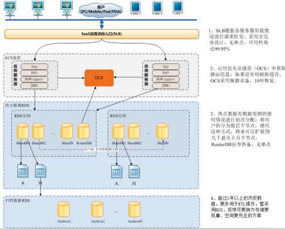
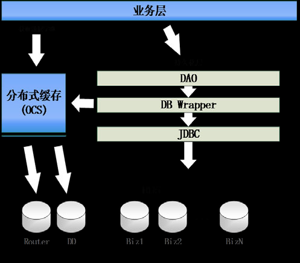
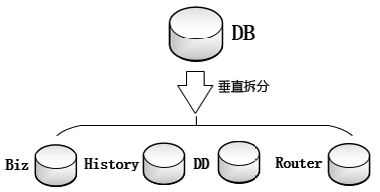
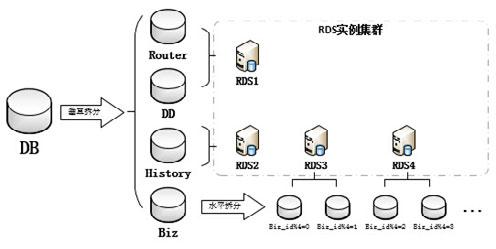

从“如何设计用户超过1亿的应用”说起—数据库调优实战
杭州湖畔网络技术有限公司是一家专业提供SaaS化电商ERP服务的创业公司，主要用户群体为经营淘宝、天猫、京东等主流电商平台、自建商城、线下渠道的商家及中小企业。作为SaaS服务提供商，服务数万乃至数十万级用户是业务架构初期就必须考虑的问题。庞大的用户群以及海量的用户数据意味着基础设施的构建必须兼顾高效与稳定，而按照通用的基础设施建设方案的话，需要面对成本过高、实现复杂、需要投入太多精力等问题，这对当时的湖畔网络这样的初创公司来说，完全不能承受。因此，更经济、更方便扩展的云服务平台成为首选。在对比现有各家云服务后，我们选择了稳定性与成熟度都经过大量用户检验的阿里云。
但要构建高性能的SaaS应用，仅凭云服务基础设施是不够的。如何基于云服务平台设计并实施符合自身业务特点的系统架构，也是决定产品性能的关键。本文将讲述我们如何利用云服务，使用相对经济的方案，解决海量用户的数据库使用问题。
架构
我们的SaaS化电商ERP服务的整体架构是基于阿里云服务平台实施的，如图1所示。

图1 系统架构精简示意图
通过该方案，不仅发挥了阿里云的优势（不涉及物理机器的维护和折损，灵活地配置升级，成熟的备份与快照方案），而且通过集群，避免了系统可能会遇到的单点故障，提高了系统弹性扩容的灵活性和可用性。
作为一个SaaS化、数据更集中、数据体量庞大的企业应用，数据库是我们整体架构中的关键节点，如何保证其稳定与性能，是本文讲述的重点。
当用户进入快速增长期后，随着业务量迅速增加，核心业务表的存量数据和增长速度绝对不是单个DB所能承受的（几乎所有单DB配置都存在性能物理上限瓶颈，即使选择升级配置也会受到成本和资源上限的约束）。因此，我们一开始就将数据库分库分片（Sharding）作为一个可行方案优先考虑，主要分析如下。
考虑到业务特性，我们最终采用了行业比较通用的水平拆分+垂直拆分策略，并自主完成DAO与JDBC之间的数据访问封装层开发工作。
水平拆分：按用户将数据拆分到多个库的相同表中
水平拆分的思路，就是将原本存放在单个RDS数据库中的数据，根据业务ID不同，拆分到多个数据库中（参见图2）。拆分后，各库的表数量及表结构都保持一致。水平拆分首先需要确立唯一的业务主表，即其他所有表的数据都与主表ID（前文所说的业务ID）存在直接或间接的主从关系，可以通过主表ID对全部数据做很好的切分。我们选择的业务主表为用户表，其他业务表或表的父表都包含一个用户ID。因此，我们切分的目标就是将不同用户数据存放到不同的数据库中。
图2 水平拆分示意图
确定了拆分规则后，下一步是着手封装Sping数据访问封装层（DBWrapper）。DBWrapper介于DAO与JDBC之间，每个业务DAO进行数据库基本操作，都会经过DBWrapper。它的主要作用是将数据库架构的变化对业务层透明，业务层可以如同操作单个DB一样，调用DBWrapper提供的数据库操作接口，而判断操作哪个数据库的逻辑，则全部交由DBWrapper封装完成（参见图3）。

图3 水平拆分架构示意图
DBWrapper主要提供新用户初始化和数据库操作接口。在新增用户初始化到系统时，需先动态判断系统各库的负载分布情况。粗略一点的算法就是判断各库的用户数，如共有4个库，可以根据user_id%4的情况决定目标库；再精细一点可以挖掘下核心业务数据的分布情况，具体分配算法需要基于业务设定（如考虑不同用户的平均订单量）。通过各库压力综合计算后，分析出压力最小的目标数据库，并将该新增用户数据存放到指定的目标库，同时更新路由信息（Router）。
当用户完成初始化进行业务操作时，则需由业务层调用DBWrapper的操作接口。DBWrapper接收到请求后，会根据业务层传入的User_id匹配Router，判断最终需要操作的RDS实例和数据库。判断完成后，只需要按部就班地开连接执行就可以了。具体的代码实现，需要结合自身的持久层框架，找一名研究过持久层框架实现的开发人员即可完成。
这样就将系统用户整体数据压力，相对均匀地分布到多个RDS实例与数据库上。事实证明，这确实是一个非常有效的方案，尤其是对于数据量大、增长迅猛的表。只是在后续实施过程中，我们发现有时会有单个用户的业务压力比较突出，针对这种情况，我们可以通过一些人工干预（如迁移数据到单独的库）进行微调，当然最终的解决方案还是要不断调优路由算法。
切分后，不可避免地需要考虑数据字典（DD）和数据路由（Router）的处理。暂时我们采用的方法是将所有数据字典与路由放入独立的库，这也是后文中垂直拆分的一种应用。需要说明的是，数据库仅是这两个业务的一种实现方式，一般还可以通过或结合分布式缓存来处理这些业务（我们选用了OCS）。而对于可能出现的单点障碍，预留的扩展方案为水平拆分或创建只读节点（只读节点可以使用RDS最新提供的只读实例，目前还在内测阶段）。
垂直拆分：按业务将表分组拆分到多个库中
与水平拆分相比，垂直拆分要更简单一些。其基本思路就是将存放在单个数据库的表分组，把其中业务耦合度较高、联系紧密的表分为一组，拆分到其他DB中（参见图4）。拆分后，各库的表结构及其业务意义将完全不同。虽然规则简单、实施方便，但垂直拆分总是需打断些关联，因为实际操作中，基础资源常常出现在各个业务场景，在切分时又不得不切分到两个库中，此时就需要业务层多次查询后，在内存处理数据，实现数据库Join的效果。

图4 垂直拆分示意图
垂直拆分同样需要DBWrapper，但封装规则与水平拆分略有不同，需要针对不同的业务，建立不同的DBWrapper。此时不再是完全业务层无感知，需要业务层根据业务场景有针对性使用。单个DBWrapper的实现与水平拆分一致。
垂直拆分的好处在于，将整体业务数据切分成相对独立的几块，隔离了不同业务之间的性能影响。而由于拆分后的数据库业务比较集中，也更容易找到业务主表，更有利于水平拆分。
对于垂直拆分，目前我们主要用于解决数据路由（包含了用户的基本信息）、数据字典模块，以及常见的冷数据问题。冷数据的处理一直是行业的常见问题（其实对于冷数据的划分，也是水平拆分），目前我们采用的方案是集中存储，即按自己的冷数据切分方式，通过自行开发的迁移程序将判定的冷数据增量迁移到一个库中。这个方案既能够分离冷数据对热点数据的操作影响，也可以为大数据的挖掘提供比较便利的条件。使用相对独立的冷数据存储结构，能方便以后采用更高效、成本更低廉的存储介质。当然该方案存在一些潜在问题，如果冷数据库满了该怎么办？目前我们预留的设计方案是，历史库的水平拆分，也可以考虑其他存储形式。
水平拆分与垂直拆分组合使用
拆分一直是数据库优化的关键词（无论是库表结构还是SQL写法），它是每个高并发产品最终都要经历的一步。拆分方案的核心主要在于可以通过添加更多RDS实例和数据库（常常为了节约成本，多个数据库可以部署在一个RDS实例上），灵活扩容系统的负载能力。在数据库架构中，水平拆分和垂直拆分一般都是搭配使用的，两者的先后顺序视具体情况而定。一般而言，垂直拆分更容易，也可以为水平拆分做铺垫，一是业务集中，便于提取主表，二是垂直拆分后，可以只水平拆分压力高的表，而业务增长缓慢的表则可以保留单DB，从而提高拆分效率以及降低实施成本（参见图5）。

图5 数据库Sharding方案示意图
我们之所以优先水平拆分，主要原因还是成本和效率及当时的一些局限性。只按业务ID（用户）做好路由配置，这样各个库中的结构完全一致，保留了原本的业务逻辑与实现，避免了跨库关联，能大大节省实现成本。
尽管拆分有种种好处，但由于分布式事务及跨库Join的实现复杂度较高及可用性较差，所以分布式事务一般都通过业务层使用乐观锁控制。而跨库的表间关联一定要打断，否则性能和实现复杂度都会超出可接受范围。对于跨库的Join、Group by等问题，都需要在业务层处理。目前我们采用的是分批查询，在业务层组装结果的方式。
有些遗憾的是，由于我们早期使用RDS时，阿里云尚未推出DRDS（分布式数据库）产品，所以上述拆分的数据库底层架构均是由我们自行研发的，投入了大量的精力。而现在有了DRDS，正准备做拆分的团队，则无需再自己造轮子，直接拿来用即可，这样团队可以将更多的精力放在业务上。
小处大有可为
虽然我们在架构上做了优化，但在产品发展过程中还是会出现性能不太理想的情况。在阿里云支持中心和论坛上，也可以看到其他业务型团队反馈使用RDS时遇到类似的情况。最初大家都怀疑是不是RDS的底层资源隔离有问题，多个用户共享资源时发生争抢，导致RDS的性能问题。但在阿里云DBA的指导和协助下，发现是由于产品设计时对数据库的使用太“不拘小节”，而随着并发压力与数据量增加，大量细小的性能问题被放大，集中暴露出来。
解决灯下黑：修正业务层的数据库操作陋习
在数据库的优化过程中，研发团队最容易忽视的往往是业务层中的数据库使用。一些优化方案可以作为开发的常态化准则。下面仅列举几个常用的优化方案。
挤掉海绵里的水：优化数据库执行计划
由于执行计划的优化往往涉及到数据库的运行机制与底层设计，此处实难三言两语说清。所以下面仅列举几个我们受益颇深的优化方案。建议大家优化执行计划时，多关注、分析iDB Cloud控制台中的性能报告和建议，也尽量多向阿里云DBA们请教，一般可以通过提工单的方式。有条件或兴趣的话，DBA可以通过预约到阿里云现场学习。另外，执行计划的优化需要大量的调试工作，通过在阿里云控制台创建生产数据库的临时实例，可以准确模拟当前系统的数据结构、分布与压力。
字段类型选择
选择合理的字段，往往可以大大减少数据库行数据的大小，并提高索引匹配的效率，进而大大提升数据库性能。使用更小的数据类型，如日期采用date代替datetime、类型或标记使用tinyint代替smallint和int、使用定长字段代替非定长字段（如char代替varchar），都能或多或少减少数据行大小，提高数据库缓冲池的命中率。而作为表字段中特殊的一员—主键，其选型更会对表索引的稳定和效率带来很大的影响，一般建议考虑数据库自增或自主维护的唯一数值。
高分离度字段建立索引
对于查询来讲，高分离度字段往往意味着精准或部分精准的条件。相对来讲是最好优化的一种场景，只需要对分离度较高的字段单独建立索引即可。当然实际使用中会有更多细节需要摸索。精确条件在各业务中基本都会用到，在越复杂的业务场景中，精确条件优先的原则，将是最有效的优化方案。需要注意的是，尽管高分离度字段单独建立索引效率很高，但过多的索引会影响表写入的效率，所以需要谨慎添加。这一点iDB Cloud中有大表索引的建议可以参考。
覆盖索引（Covering Index）
通俗一点理解，就是执行计划可以通过索引完成数据查找和结果集获取，而无需回表（去缓冲池或磁盘查找数据）。而由于MySQL的索引机制限制，一次查询时，将只用到一个索引或将两个索引聚合（index_merge）起来使用，所以意味着复杂的业务场景中，单独对每个字段建立索引可能没有什么用处。所以对于一些特定的查询场景，建立合适的组合索引，应用覆盖索引方法可以避免大量随机I/O，是更为推荐的优化方案（如果执行计划Explain的Extra中有Using Index，就说明使用了覆盖索引）。但实际业务总是会比索引本身更复杂，业务中需要查找或者获取的字段信息往往是很多的，而组合索引并不能涵盖所有的字段（否则我们将拥有一个比数据还要庞大的索引）。此时，为了应用覆盖索引，就需要使用主键延迟关联（Deferred Join），即先通过组合索引中包含的字段条件，初步查询出相对较小的结果集（面向结果集原则），该结果集只包含主键字段；然后通过获取到的这个主键队列，再对数据表做关联。
适当妥协
见招拆招：升配置
一般业务型的研发团队，很难有额外的精力投入到数据库方面，也没有专业的DBA来不断调优数据库配置、优化数据库服务器性能。所以早期团队可以选择的方案不多，也很难在技术上深挖下去，只能用成本换时间：性能配置不够，那就升级服务器配置。
那么问题来了：自己部署的数据库要升级配置，除了调整数据库配置参数，还会受到物理机的限制，因此就要考虑更加复杂的数据库备份和同步策略。但这是业务团队所不能接受，甚至短期内无法实现的，升配置也就变成了一个复杂的问题。不过我们使用了RDS，其弹性升级策略，正是这个问题的最佳解决方案。
二八原则
在长期的数据库乃至整个产品的优化过程中，我感受最深刻的就是：完美的方案可遇不可求。选择方案时，如果能解决80%的问题，并规避或保留剩下的20%，则将大大提升团队的整体效率。产品与架构都是在不断优化演变的，我们要循序渐进、不断努力，将今天的终点留作明天的起点。
总结与展望
作为一位创业公司的技术开发人员，通过实际使用阿里云产品，我总结了几点关于使用云计算产品的优势。
1. 便利的服务器弹性升级功能，可随时应付像“双十一”这样的大促。而通过使用传统IDC托管模式，物理机的维护、升级以及升级后的数据迁移都是比较头疼的。
2. 成熟可靠的数据备份与快照、数据库主从分离与同步的底层方案。创业团队无须承受自己造轮子的代价，可专注于业务开发。
3. 云计算产品经过检验、值得信赖的安全防护。
4. 精简了创业团队人员规模。云计算平台具备专业的技术支持与服务，使得创业团队不再需要数据库和服务器管理员。
除了使用云产品的心得，数据库调优实践是本文的重点。在数据库的架构设计与性能优化方面，我秉承的原则是解决主要问题，按先分而击之、再挖掘细节的步骤，周返往复不断进行，同时系统架构也在这个过程中不断演变。相信随着时间推移，会有更多优秀的方案出现。尤其随着云服务不断发展，业务研发团队投入到基础设施的精力与成本，将会无限减少。会有越来越多专注于业务研发的团队，推出更多优秀的互联网产品，用互联网服务推动企业创新，重塑中小企业信息化形态。
- 采用SLB（Server Load Balance，负载均衡）作为Web集群访问入口，负责为Web端的多台服务器进行流量分发。SLB是基于集群建设的，并且可以随时变配，按量付费。它不仅为我们实现了成熟的负载均衡方案，其稳定性与灵活性也为Web集群提供了更多可能。
- 后端配置多台ECS（Elastic Compute Service，云服务器）实例，将主要应用服务都部署在ECS上。除了可弹性扩容这一特性，ECS提供的安全防护和快照备份为服务器安全和容灾提供了非常成熟的解决方案，这恰恰是我们这种业务型创业团队积累相对最薄弱的方面。另外，ECS多线接入骨干网络能保证网络的稳定和性能，使得任何网络的用户访问应用服务都非常顺畅。
- DB集群由多台RDS（Relational Database Service，关系型数据库服务）实例组成。RDS是云数据库，简单易用，使用方法与自行部署的数据库完全一样。其成熟的双机热备与底层资源隔离，保证了我们这两年来数据库的平稳运行。另外，强大的iDB Cloud控制台、专业的DBA团队支持，为我们监控数据库运行状况、定位和解决数据库问题，提供了非常多的建议和帮助。
- 集群之间的共享资源统一存放在OCS（Open Cache Service，开放缓存服务）中。我们用OCS来存放数据路由和实时性不高的业务数据。缓存作为我们架构性能中非常重要的一个环节，在承受了来自整个集群各方面压力的同时，还要保证响应稳定高速。
- 场景：业务热点数据持续增加，团队有一定的数据库架构积累能支撑独立研发或熟悉成熟的中间件（如Cobar）。
- 优点：成本低（可以利用开源免费的数据库集群替代大型商业DB）；可灵活扩容（不断增加新的数据库切片即可）；相对均匀分布的数据读写，避免单点障碍。
- 缺点：需要研发团队在数据库架构上投入大量精力；数据库集群维护需要成本投入。
- 场景：数据库性能有问题，应优先从业务层分析。
- 优点：减轻数据库的直接压力，比执行数据库优化方案更加迅速有效。
- 缺点：业务研发需要关注一些数据库操作内容；有时会牺牲一些业务；产品规模越大实施越困难。
- 延迟加载。很多页面展现时，单个实体实际只展现部分内容，因此可按需加载，减轻数据库压力，又节省网络流量。延迟加载也可体现在数据库表的拆分设计上。
- 适当缓存，以空间换时间。对于很多实时性较低或干脆就是数据字典的内容，无需实时到数据库中加载，只需在使用前加载到内存中，实际使用时到内存中获取即可。
- 减少不必要的开连接（连接池、批量查询及提交）。对于大部分的Web应用，连接池大大减少了系统因开数据库连接产生的开销。而在查询和提交中，将多个任务合并到一次数据库操作中，也可以大大提高数据库使用效率。
- 乐观锁是高并发下不错的解决方式。相比于数据库的悲观锁，业务层实现的乐观锁，不仅能减少锁争抢，还可以减少数据库的锁开销，进而提高数据库使用效率。
- 分解大事务。数据库对于大事务的原子性保证，也是不容忽视的开销。业务使用时，尽量将大事务切分为小事务，或者适当利用异步提交，精简事务体积。
- 合理使用Join。数据库执行计划中，有一条准则是越简单越快速。所以通过适当冗余数据设计或业务层分批查询后内存组装数据，减少数据库Join语句及SQL复杂度，对于数据库执行效率和执行计划的优化都有不可忽视的好处。
- 场景：并发不多、数据量并不很大，或系统整体压力较低，只有某几个业务点性能较差。
- 优点：在不改变基本条件的情况下，挖掘数据库更大潜力。
- 缺点：需要DBA协助或研发团队对数据库执行计划做研究。
- 场景：性能问题紧迫，团队时间资源有限。
- 优点：简单粗暴见效快，基本适用于任何优化阶段。
- 缺点：增加成本；治标不治本，只是延迟问题再次爆发时间；资源总有上限，迟早升无可升。
本文为CSDN原创文章，未经允许不得转载，如需转载请联系market#csdn.net(#换成@)
- 顶
- 1
- 踩
- 0
- 相关文章
- 最新报道
- CSDN官方微信
- 扫描二维码,向CSDN吐槽
- 微信号：CSDNnews

微博关注
相关热门文章


01.jpg)

已有3条评论
还可以再输入500个字